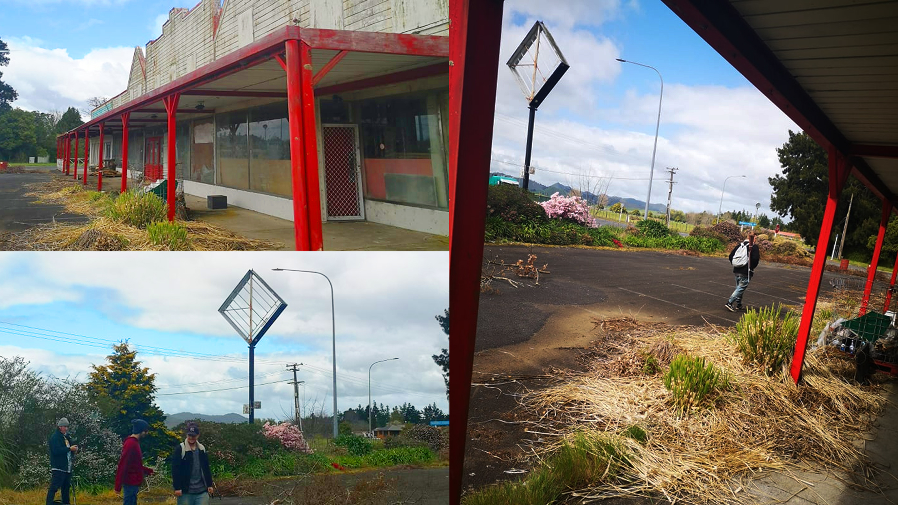

biography
Hi there! My name is Joel Hinton, and I am a design student who will hopefully be soon graduating with a Bachelor of Design, majoring in media design. I have always been a visual person and since my early years in high school I joined a design class and have never looked back.
I have always gravitated to visual media. I’ve always been obsessed with aesthetics and what makes something visually appealing. As a kid I created a lot, whether it was a character for a comic, or just a page full of a random assortment of colors, nothing stopped me from experimenting. And as I grew older that obsession with aesthetic and design blossomed, turning me into the designer I am now. During my time at Waikato, I have learned more and more about my personal style, what I like about design, what I dislike. But mainly it has allowed me to see the passion shared by many other like-minded people. The technical side of design, while important, isn’t what interests me. What does interest me is seeing other people grow as artists, how their style evolves, how they can bend design to their will, creating something unique and ‘very them’. That’s what I love about design. I just love creating, expressing myself visually and seeing others doing the same.
project description
Our film was inspired by the quote from the First things First 2020 manifesto
We created social media posts to advertise our film ‘It Breathes’. as well as this we created a
website to show off our concept work, such as photography and behind the scenes.
“We must understand that we are not outside of nature; we are part of a complex system, and our
actions must reflect that knowledge”.
It Breathes is a short film based around the idea of the importance of human connection, of
human consequence and how we can better ourselves and the world through change. It’s a film that I feel
really wants to give hope to the viewers.
It’s not afraid to show how a broken world can affect us as people, how it will change our way
of life. But it’s also not afraid to show how strong the bonds of humanity are, and how even in the
darkest of times we can still fix things.
We hope it can breathe new life into the word ‘Hope’.
It Breathes Project

For more information contact us
Email: degreeshow@waikato.ac.nz
Faculty phone: 0800 924 528
Faculty information: cs.waikato.ac.nz